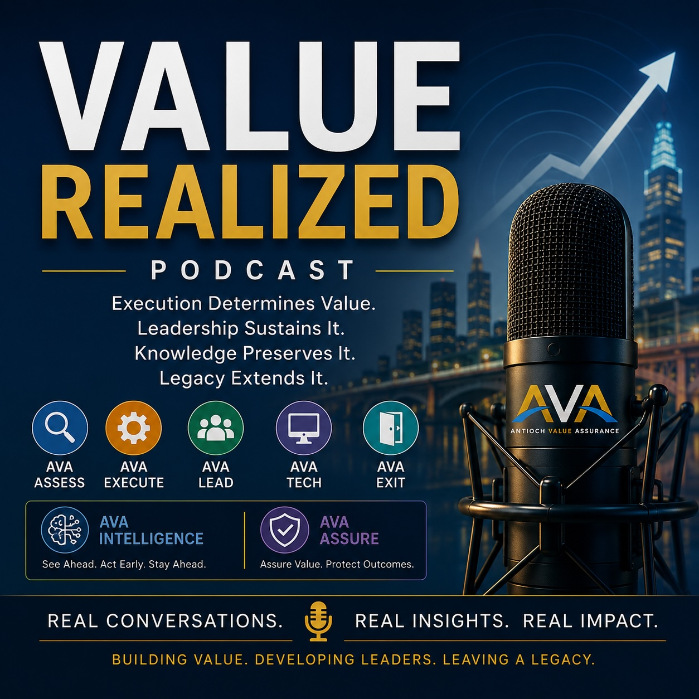

Episode 01
Why Most Synergies Never Materialize
A practical discussion on why expected value often disappears between deal approval, close, integration, and benefits realization.
Listen Now →Value Realized Podcast
Hosted by Kevin Morris, the Value Realized Podcast explores why value is lost, how execution breaks down, and what leaders can do to turn strategy into measurable outcomes.
Explore Episodes
This podcast is built for executives, deal teams, transformation leaders, technology leaders, project sponsors, and anyone responsible for delivering the value promised to shareholders, stakeholders, customers, and employees.
Listen & Subscribe
Add your podcast platform links below once the show is live.
A practical discussion on why expected value often disappears between deal approval, close, integration, and benefits realization.
Listen Now →Why exits, separations, TSAs, stranded costs, and transition readiness can determine whether value is protected or lost.
Listen Now →What leaders should focus on after close to stabilize the business, protect value, and build execution momentum.
Listen Now →How governance can move beyond status reporting and become a system for decisions, accountability, and value protection.
Listen Now →How value leaks through unclear ownership, poor dependencies, weak planning, delayed decisions, and missed benefits.
Listen Now →Why ERP, data, cybersecurity, infrastructure, and applications must be treated as value-critical elements of execution.
Listen Now →Integration, separation, Day-1 readiness, governance, and benefits realization.
Executive alignment, accountability, decision velocity, and operating cadence.
IT readiness, data, cybersecurity, ERP, infrastructure, and digital enablement.
How organizations protect, measure, assure, and continuously realize value.
Guests & Conversations
The podcast welcomes thoughtful conversations with executives, operators, deal leaders, technology leaders, transformation professionals, and others who care about execution and enterprise value.
Subscribe to the Value Realized Podcast for practical thinking on M&A, transformation, leadership, technology, and enterprise value assurance.
Explore Episodes